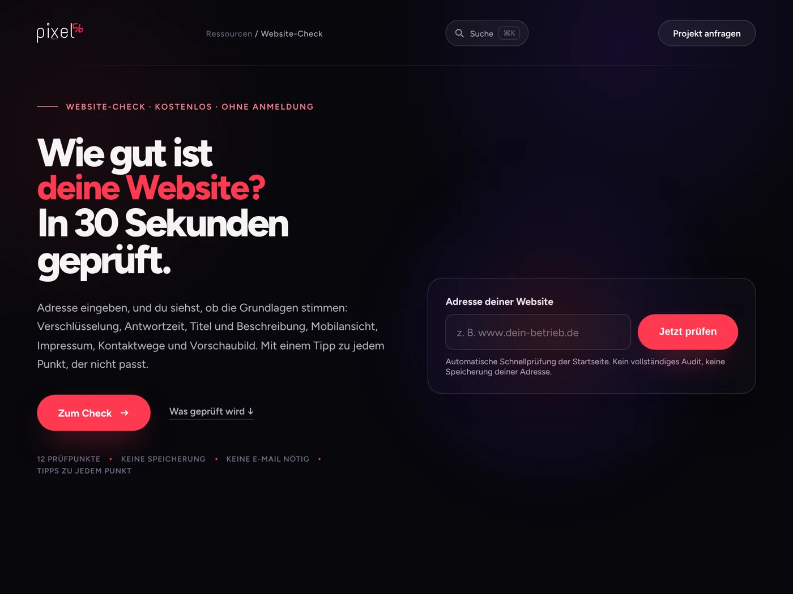
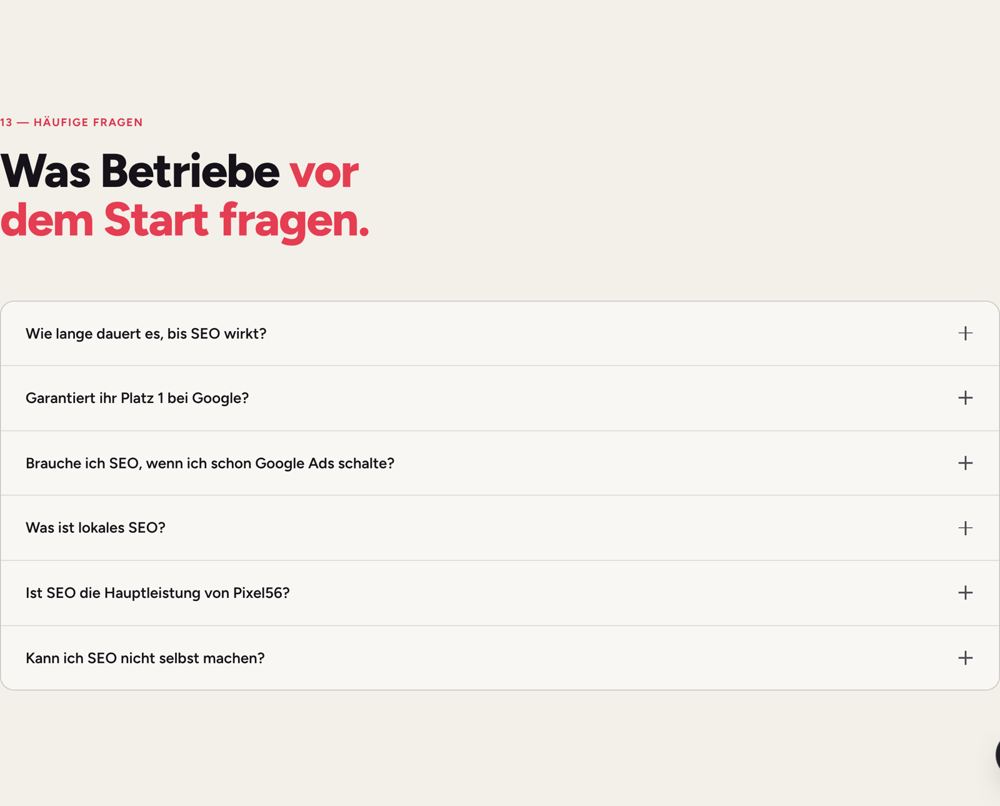

Immer mehr Kunden googeln nicht mehr, sie fragen. Google antwortet mit KI-Übersichten und KI-Modus, dazu ChatGPT und Co. Dieser Leitfaden zeigt, woher die Antworten kommen, wie du prüfst, ob dein Betrieb vorkommt, und welche fünf Hebel das ändern. Mit Selbsttest, Vorlagen, 30-Tage-Plan und einer Kurzfassung zum Ausdrucken.
Drei Zahlen, die den Unterschied zu 2023 ausmachen. Keine Panik nötig, aber ein klarer Blick.
der Google-Suchanfragen in Deutschland zeigen oben eine KI-Übersicht, bei Fragen und seltenen Begriffen deutlich mehr.
Sistrix, über 100 Mio. Suchbegriffe, Anfang 2026. Im August 2025 waren es 17 %.Seitdem gibt es in Deutschland den KI-Modus in der Google-Suche: ein eigener Reiter, der ganze Gespräche statt Trefferlisten liefert.
Google, Start in Deutschland und weiteren EU-LändernMenschen nutzen ChatGPT jede Woche. Viele davon fragen dort nach Handwerkern, Preisen und Erfahrungen, statt zu googeln.
OpenAI, Februar 2026Bei reinen Wissensfragen („Wie oft Dachrinne reinigen?“) klicken weniger Menschen auf Websites, die Antwort steht schon da. Bei lokalen Fragen („Wer macht das in Koblenz?“) nennt die KI Betriebe, mit Begründung und Quelle. Wer genannt wird, bekommt den Anruf. Wer nicht, existiert für diesen Kunden nicht.
Die KI erfindet keine Betriebe. Sie zieht aus dem, was sie findet: Google-Unternehmensprofil, Bewertungen, deine Website, Verzeichnisse, Presse. Wer die SEO-Grundlagen hat, steht gut da. Dieser Leitfaden setzt darauf auf und ergänzt, was für KI-Antworten zusätzlich zählt.
Ob Google, ChatGPT oder ein anderer Assistent: Hinter jeder Antwort auf eine lokale Frage stecken dieselben drei Zutaten. Zwei davon kannst du beeinflussen.
Das Modell hat Texte aus dem Netz gelesen, Stand irgendwann in der Vergangenheit. Für „Wie funktioniert eine Wärmepumpe?“ reicht das. Für „Wer baut sie mir in Lahnstein ein?“ nicht. Beeinflussbar: kaum.
Bei konkreten Fragen sucht die KI im Moment der Frage im Netz, liest ein paar Seiten und baut daraus die Antwort, mit Quellenangabe. Deine Website, Verzeichnisse, Presse. Beeinflussbar: ja, über Inhalt und Technik.
Bei Google kommen Unternehmensprofil, Karten und Bewertungen direkt dazu. Auch andere Assistenten lesen Bewertungen und Profile. Beeinflussbar: ja, über Profil und Bewertungen.
Ein Betrieb, ein Name, eine Adresse, überall gleich. Klare Sätze: wer, was, wo. Die KI muss dich als einen bestimmten Betrieb erkennen können, nicht raten.
Andere sagen es auch: Bewertungen mit Inhalt, Einträge bei Innung und Verzeichnissen, Erwähnungen in Presse und Partnerseiten. Eine Quelle ist Behauptung, fünf sind Beleg.
Deine Seiten beantworten echte Fragen in ganzen Sätzen: Kosten, Dauer, Ablauf, Einzugsgebiet. Was die KI zitieren kann, zitiert sie. Werbesprache kann sie nicht zitieren.
Stell die sechs Fragen in drei Systemen: Google KI-Modus (Reiter „KI-Modus“ in der Google-Suche), ChatGPT und einem dritten, etwa Perplexity oder Copilot. Privates Fenster, nicht eingeloggt. Trag ein, ob dein Betrieb genannt wird und welche Quellen die Antwort nennt.
| Frage (Platzhalter ersetzen) | Google KI-Modus | ChatGPT | Drittes System | Genannte Quellen |
|---|---|---|---|---|
| Welcher [Gewerk] in [Stadt] ist empfehlenswert? | ||||
| Was kostet [Leistung] in [Stadt] ungefähr? | ||||
| Wer macht [Leistung] mit Notdienst in [Stadt]? | ||||
| [Dein Betriebsname] Erfahrungen | ||||
| Worauf muss ich bei [Leistung] achten, und wer berät in [Region]? | ||||
| Vergleich: die besten [Gewerk] in [Stadt] und Umgebung |
Eintragen: „ja“, „nein“ oder „Wettbewerber X“. In der letzten Spalte die Quellen, die die KI anzeigt: Unternehmensprofil, bestimmte Websites, Portale, Presse. Genau dort musst du vorkommen. Kein Handwerk? Auf Seite 13 stehen die Fragen für sechs weitere Branchen.
Gut. Sichere das ab: Schau, welche Quelle dich getragen hat, und stärke sie (Hebel 2 und 4). Wiederhole den Test monatlich.
Öffne deren Quellen. Meist siehst du sofort: mehr Bewertungen mit Text, eine Seite, die die Frage beantwortet, ein Innungs- oder Presseeintrag. Das ist deine Liste.
Die KI findet in deiner Stadt zu wenig Belegbares. Chance: Wer jetzt Hebel 1 bis 3 umsetzt, ist der Erste, den sie nennen kann.
Die KI muss dich als einen bestimmten Betrieb erkennen und mit allem verknüpfen, was über dich im Netz steht. Jede Abweichung zerlegt dich in zwei halbe Betriebe.
Website, Unternehmensprofil, Impressum, Verzeichnisse, Social-Media-Profile. „Müller Bedachungen GmbH“ oder „Müller Dach“? Entscheide dich einmal und zieh es durch.
„Müller Bedachungen ist ein Dachdecker-Meisterbetrieb in Koblenz, spezialisiert auf Flachdach und Dachsanierung, seit 1998.“ In Profil, Website, Verzeichnissen. Die KI lernt diesen Satz.
Inhaber, Meistertitel, Innungsmitgliedschaft, Gründungsjahr, Teamgröße, Einzugsgebiet. KI-Systeme bevorzugen Quellen, hinter denen erkennbar Menschen stehen.
Nicht nur im Logo oder in Bildern. „Dachdecker in Koblenz, Neuwied, Lahnstein und Vallendar“ als Satz auf der Startseite und im Fuß. Was nicht als Text da steht, liest keine Maschine.
Die LocalBusiness-Auszeichnung (strukturierte Daten) nennt Name, Adresse, Telefon, Öffnungszeiten, Einzugsgebiet und verweist mit „sameAs“ auf Profil, Verzeichnisse und Social Media. Macht deine Agentur in einer Stunde.
Vorgänger, Umzug, zweite Nummer: Google-Suche nach deinem Namen in Anführungszeichen. Alles, was abweicht, korrigieren oder löschen lassen.
„Super, gerne wieder“ hilft dem Schnitt. „Flachdach in Vallendar in drei Tagen saniert, Baustelle sauber hinterlassen, Preis wie im Angebot“ hilft der KI. Sie zitiert genau solche Sätze, wenn jemand nach Flachdach in Vallendar fragt.
Nicht „bitte bewerten“, sondern „schreib gern, was wir gemacht haben und wie es lief“. Vorlage unten. Drei Stichworte reichen: Leistung, Ort, was gut war.
„Danke! Die Dachsanierung in Lahnstein hat uns auch Freude gemacht.“ Deine Antworten sind Text, den die KI ebenfalls liest, und du bestimmst, was drinsteht.
Zwanzig Bewertungen in einer Woche und dann ein Jahr nichts wirkt für Google und für Leser verdächtig. Eine pro Woche ist mehr wert.
Google zuerst. Danach das Portal, das in deiner Branche zählt (Branchenportal, Handwerksportal, Bewertungsportal). KI-Systeme vergleichen Quellen; zwei Plattformen mit demselben Bild sind ein Beleg.
Google und die KI-Anbieter filtern Muster. Auffliegen kostet Profil und Vertrauen. Es gibt keine Abkürzung, die sich lohnt.
Die KI sucht Sätze, die sie zitieren kann. „Wir sind Ihr kompetenter Partner“ ist nicht zitierbar. „Eine Flachdachsanierung dauert bei einem Einfamilienhaus meist zwei bis vier Tage“ schon.
Die Fragen, die dir am Telefon gestellt werden. Jede Antwort in zwei bis vier Sätzen, direkt, ohne Einleitung. Technisch als FAQ-Auszeichnung hinterlegt.
Keine Preisliste nötig, aber eine Spanne oder die Faktoren: „Richtwert ab … pro Quadratmeter, abhängig von Dämmung, Zugang und Zustand.“ Seiten mit Zahlen werden zitiert, Seiten mit „auf Anfrage“ nicht.
„So läuft es ab: Besichtigung, Angebot innerhalb von 48 Stunden, Ausführung, Abnahme.“ Dazu Dauer je Leistung und die Orte, in denen du arbeitest.
„Stand: Oktober 2026, Thomas Müller, Dachdeckermeister.“ Aktualität und Urheber sind Vertrauenssignale, für Leser und für Maschinen.
Drei bis fünf Projektseiten mit echten Fotos und Zahlen schlagen hundert Zeilen Werbetext. Die KI nennt gern Beispiele, wenn sie welche findet.
H2 „Was kostet eine Dachsanierung in Koblenz?“, darunter die Antwort im ersten Satz. So liest eine Maschine, und so liest ein Mensch am Handy.
Wie lange dauert eine Flachdachsanierung? Bei einem Einfamilienhaus mit bis zu 120 Quadratmetern dauert die Sanierung in der Regel zwei bis vier Arbeitstage. Länger wird es, wenn die Dämmung erneuert oder der Untergrund ausgebessert werden muss. Den genauen Zeitplan nennen wir nach der Besichtigung, in Koblenz und Umgebung meist innerhalb einer Woche.
Deine Website ist eine Behauptung. Innung, Verzeichnisse, Presse, Partner und Videos sind Belege. KI-Systeme vergleichen Quellen, bevor sie einen Namen nennen.
Das Örtliche, Gelbe Seiten, 11880, dazu Kammer und Innung. Diese Quellen gelten als verlässlich und werden oft zitiert.
Viele Hersteller führen „Fachbetriebe in Ihrer Nähe“. Dort stehen heißt: eine unabhängige Seite bestätigt dein Gewerk, deinen Ort und deine Spezialisierung.
Lokalzeitung, Stadtportal, Vereinsseite, Ausbildungsmesse, Sponsoring. Eine Meldung „Müller Bedachungen bildet drei Lehrlinge aus“ mit Link ist für die KI ein Beleg, dass es dich gibt und was du tust.
Zwei Minuten am Handy: Inhaber stellt den Betrieb vor, Baustelle, Team. Auf YouTube mit Betriebsname, Ort und Leistung im Titel. KI-Antworten zitieren zunehmend Videos.
Beschreibung bei Innung, Verzeichnis, YouTube, Social Media: immer derselbe Kern. Fünf Quellen, die dasselbe sagen, sind für eine Maschine Gewissheit.
Sechs Punkte, die deine Agentur in einem Nachmittag prüft. Der erste ist eine Entscheidung, die du bewusst treffen solltest.
Googles KI-Übersichten nutzen den normalen Google-Zugriff; wer den sperrt, ist aus der Suche raus. Die ChatGPT-Suche hat einen eigenen Zugriff (OAI-SearchBot), getrennt vom Training (GPTBot). Für Sichtbarkeit: Suche erlauben, Training nach eigener Haltung entscheiden. Steht in der Datei robots.txt.
Preisliste als Bild, Leistungen als Grafik, Öffnungszeiten im Flyer-PDF: unsichtbar für Maschinen. Alles Wichtige als normalen Text auf die Seite.
LocalBusiness (Hebel 1) und FAQ (Hebel 3) als maschinenlesbare Auszeichnung. Mit Googles „Test für Rich-Suchergebnisse“ kostenlos prüfbar.
Langsame Seiten werden seltener vollständig gelesen, von Besuchern wie von Maschinen. PageSpeed Insights zeigt den Stand.
Eine H1 je Seite, H2 als Fragen, Titel nach dem Muster „Leistung in Stadt | Betrieb“. Maschinen lesen Struktur, bevor sie Inhalt lesen.
Eine einfache Textdatei, die KI-Systemen sagt, wer du bist und welche Seiten zählen. Noch kein Standard, den alle lesen, aber kostenlos und in zehn Minuten erledigt.
deine-website.de/robots.txt auf. Steht dort „Disallow: /“ unter einem Namen wie Googlebot oder OAI-SearchBot, sperrst du dich selbst aus. Steht dort nichts oder nur „Allow“, ist alles offen. Im Zweifel die Agentur fragen, mit genau diesem Satz.Mit jeder neuen Technik kommen neue Versprechen. Diese sechs hören wir am häufigsten.
„Wir machen KI-Optimierung mit Garantie, in vier Wochen wirst du von ChatGPT empfohlen.“
Niemand kontrolliert, was ein KI-System nennt. Seriös ist, die fünf Hebel umzusetzen und monatlich zu messen. Garantien sind ein Warnzeichen.
„Hundert Stadtseiten, von der KI geschrieben, dann werden wir überall genannt.“
Massenhaft gleiche Texte erkennen Google und KI-Systeme als wertlos. Fünf echte Seiten mit Projekten vor Ort schlagen hundert Kopien.
„Wir müssen jetzt überall ‚KI‘ und unseren Namen so oft wie möglich schreiben.“
Wiederholung hilft nicht, Klarheit schon. Ein eindeutiger Satz, überall gleich, wirkt mehr als zwanzig Nennungen auf einer Seite.
„Wir sperren alle KI-Zugriffe, die sollen unsere Inhalte nicht klauen.“
Wer die Suche sperrt, verschwindet aus den Antworten. Training und Suche sind getrennte Zugriffe. Bewusst entscheiden, nicht pauschal zumachen (Hebel 5).
„SEO ist tot, Website braucht keiner mehr.“
Die KI zitiert Websites. Ohne Seite, die Fragen beantwortet, gibt es nichts zu zitieren. Die Grundlagen zählen mehr als vorher, nicht weniger.
„Bewertungen schreiben wir uns selbst, das merkt keiner.“
Muster in Zeit, Sprache und Konten werden erkannt. Das Risiko ist das Profil. Eine echte Bewertung mit Inhalt pro Woche ist der schnellere Weg.
Die Werkzeuge hinken der Technik hinterher. Was heute messbar ist, in fünf Minuten pro Woche.
Die Zahlen, die am Ende Aufträge sind. Dazu die Suchbegriffe, über die dein Profil gefunden wurde. Wenn dort Fragen auftauchen („dachdecker koblenz empfehlung“), wirkt Hebel 1 und 2.
Einmal im Monat, derselbe Tag, dieselben sechs Fragen, drei Systeme. Trag ein, wie oft du genannt wirst. Nach drei Monaten siehst du eine Richtung, nach sechs einen Trend.
Profil- und Bewertungsänderungen zeigen sich in KI-Antworten oft innerhalb weniger Wochen. Neue Seiteninhalte brauchen, wie bei der klassischen Suche, ein bis drei Monate. Antworten bleiben schwankend; Ziel ist, regelmäßig genannt zu werden, nicht jedes Mal. Wer dir Festes verspricht, hat Seite 10 nicht gelesen.
Jede Woche ein Schwerpunkt, zwei bis drei Stunden Aufwand. Danach läuft es im Monatsrhythmus weiter.
Selbsttest (Seite 4) ausfüllen. Betriebsname in Anführungszeichen googeln, alle Abweichungen bei Name, Adresse, Telefon notieren und korrigieren. Den einen Beschreibungssatz festlegen.
Bewertungslink als QR auf die Rechnung, Vorlage (Seite 6) ins Handy. Jede offene Bewertung mit Leistung und Ort beantworten. Profilbeschreibung auf den einen Satz bringen, zehn echte Fotos.
Die wichtigste Leistungsseite: fünf Kundenfragen mit direkten Antworten, Kosten-Einordnung, Ablauf, Dauer, Einzugsgebiet, Datum und Name. Über-uns-Seite ergänzen.
Innung, Kammer, drei Verzeichnisse prüfen oder anlegen. Einen Hersteller nach der Partnerliste fragen. robots.txt, strukturierte Daten und Ladezeit von der Agentur prüfen lassen.
Vier Texte, die in Hebel 1 bis 4 immer wieder gebraucht werden. Einmal festlegen, dann überall gleich verwenden.
„[Betrieb] ist ein [Gewerk]-Meisterbetrieb in [Stadt], spezialisiert auf [Leistung 1] und [Leistung 2], seit [Jahr]. Wir arbeiten in [Region] und Umgebung.“
Der Selbsttest von Seite 4 gilt für jede Branche. So klingen die Fragen dort. Orte und Leistungen austauschen, dann in die Tabelle.
Wer tauscht in [Stadt] eine Gasheizung gegen eine Wärmepumpe, und was kostet das ungefähr?
Notdienst bei Rohrbruch in [Stadt], wer kommt heute?
Welcher Steuerberater in [Stadt] betreut Handwerksbetriebe und kennt sich mit Bauabzugsteuer aus?
Was kostet die laufende Buchhaltung für eine GmbH mit zehn Mitarbeitern?
Welche Praxis in [Stadt] hat kurzfristig Termine und behandelt Rückenschmerzen nach Bandscheibenvorfall?
Physiotherapie [Stadt] Erfahrungen
Freie Werkstatt in [Stadt] für [Marke] mit Garantieerhalt bei der Inspektion?
Was kostet ein Bremsenwechsel in [Stadt] ungefähr?
Welcher Lohnfertiger in [Region] fräst Kleinserien aus Aluminium mit kurzer Lieferzeit?
Sondermaschinenbau [Region] mit Referenzen aus der Lebensmittelindustrie
Welcher ambulante Pflegedienst in [Stadt] hat freie Kapazität und übernimmt Pflegegrad 3?
Was zahlt die Pflegekasse bei [Leistung], und wer berät in [Stadt] kostenlos?
Für die Pinnwand im Büro. Haken nur, was heute wirklich erledigt ist, dann zählen und unten ablesen.
Mein Stand am : von 28
Sechs Fragen in drei Systemen (Seite 4) sind 18 Antworten. Eintragen, in wie vielen dein Betrieb vorkommt. Derselbe Tag im Monat.
| Monat 1 | Monat 2 | Monat 3 | Monat 4 | Monat 5 | Monat 6 | |
|---|---|---|---|---|---|---|
| Genannt in … von 18 | ||||||
| Neue Bewertungen mit Inhalt |
Keine Theorie: Unsere eigene Website ist 2026 neu entstanden, und jeder Hebel aus diesem Leitfaden steckt drin. Du kannst alles nachprüfen.

Hebel 1 · EindeutigEin Betrieb, ein Datensatz: Name, Telefon und Beschreibung auf allen über 700 Seiten identisch, als LocalBusiness hinterlegt, 13 Standortseiten mit eigenem Text statt Kopien.

Hebel 3 · AntwortfähigJede Leistungsseite mit echten Kundenfragen und direkten Antworten, maschinenlesbar als FAQ. Fragen als Zwischenüberschriften, eine H1 je Seite.
Google-Bewertungen im Wortlaut, mit Datum und Link zum Profil, nicht umformuliert. Kundenstimmen aus Projekten als Zitate gekennzeichnet.
Veröffentlichte Projekte mit Namen und Website der Kunden, Kundenstimmen im Wortlaut, Logos der Betriebe, Links zu den eigenen Produkten. Jede Behauptung hat eine zweite Quelle.
Suchzugriffe erlaubt, llms.txt mit Kurzbeschreibung und wichtigsten Seiten, Ladezeit im grünen Bereich, Barrierefreiheit und SEO bei 100 Punkten in Googles PageSpeed-Test (Oktober 2026).
Die Technik ist der kleinste Teil. Die meiste Zeit ging in ehrliche Antworten auf echte Fragen und in das Aufräumen von Daten, die über Jahre auseinandergelaufen waren. Genau das gilt auch für einen Handwerksbetrieb: zwei Nachmittage Aufräumen, dann jede Woche eine halbe Stunde.
Im kostenlosen Erstgespräch gehen wir deinen Selbsttest und deine Kurzfassung von Seite 14 durch und sagen dir, welcher Hebel bei dir zuerst wirkt. Kein Verkaufsgespräch, keine Verpflichtung.
Per WhatsApp an 0178 5282464, per E-Mail an info@pixel56.de oder direkt einen Termin wählen:
calendly.com/pixel56/15minDigitalagentur aus der Region Koblenz, gegründet 2018 und geführt von Atilla Ciftcioglu. Websites, Kampagnen, Content, SEO und KI-Prozesse für Handwerk, Dienstleister und Mittelstand. Ein Ansprechpartner pro Projekt, deutschlandweit im Einsatz.
Lokales SEO für Handwerker, sieben Schritte und 30 Prüfpunkte: www.pixel56.de/checkliste-seo. Wo spart KI in deinem Betrieb wirklich Zeit, 22 Prüfpunkte: www.pixel56.de/checkliste-ki-agenten. Website-Check in 30 Sekunden: www.pixel56.de/website-check